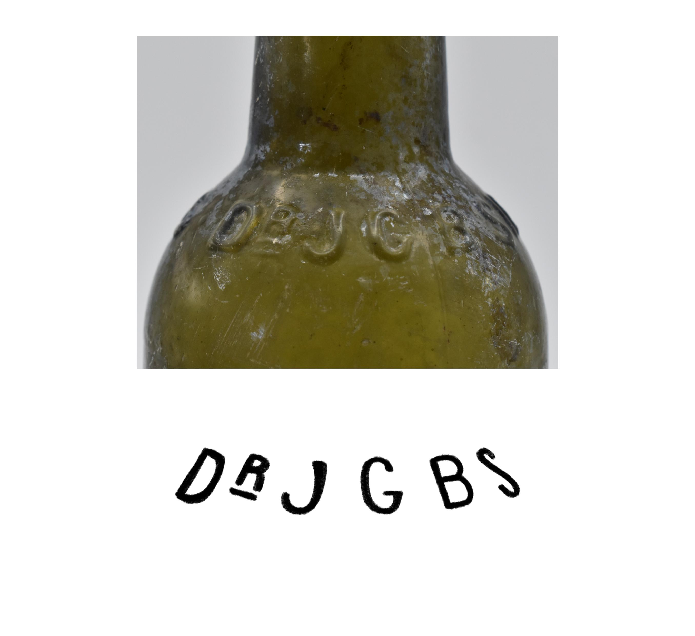
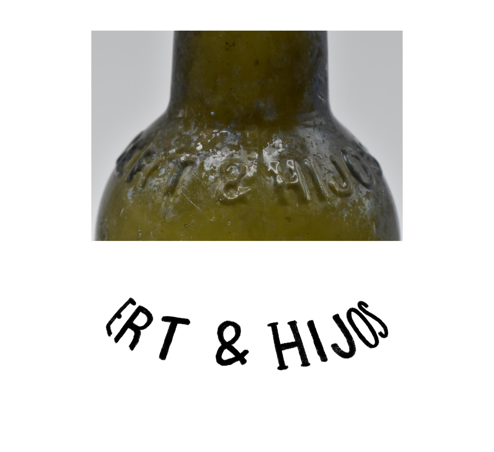
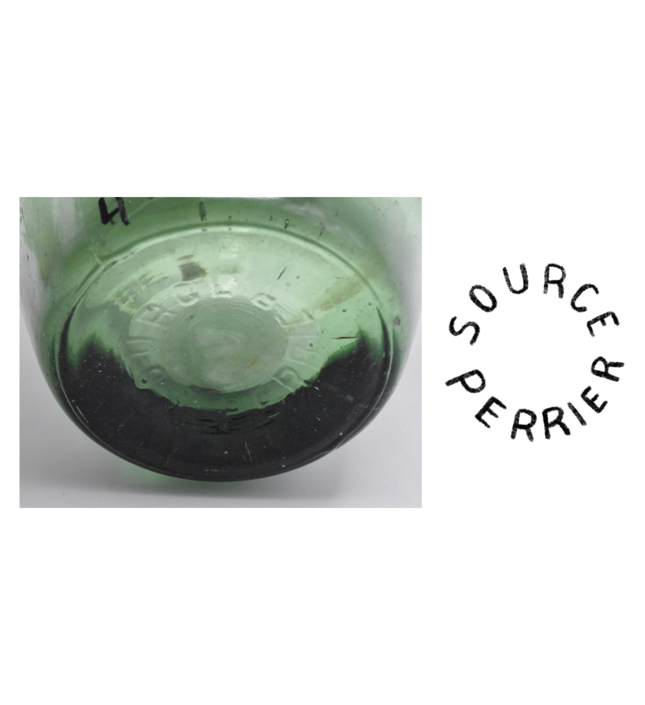
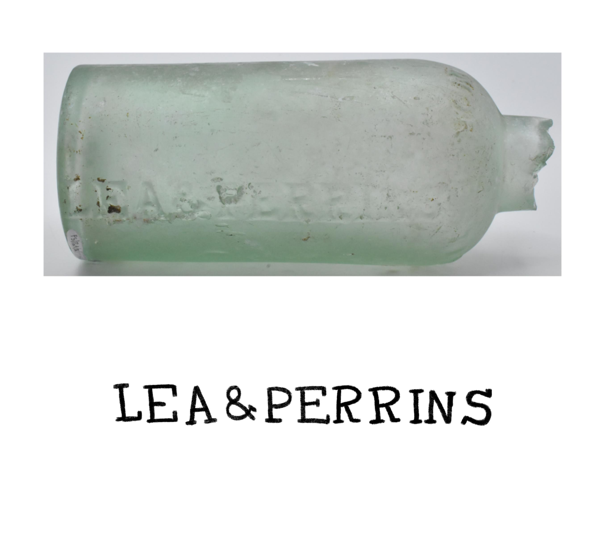
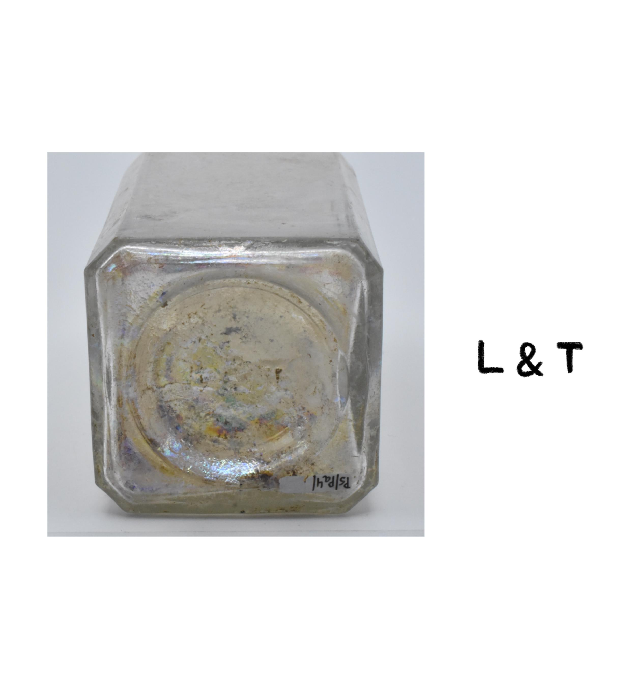

PROYECTO 02
Digitalización de marcas e inscripciones

Cada marca cuenta una historia. No siempre la información más valiosa de un objeto es la más fácil de ver. En muchas botellas antiguas, los sellos e inscripciones en relieve pueden pasar desapercibidos debido al desgaste del tiempo, la transparencia del vidrio o las dificultades para fotografiarlos.

En esta oportunidad realizamos la digitalización de marcas e inscripciones presentes en botellas asociadas al puerto de Valparaíso entre el siglo XIX y comienzos del siglo XX. A partir del tratamiento digital de fotografías fue posible destacar los relieves y generar dibujos claros de cada sello, facilitando su lectura y registro.

Algunas inscripciones corresponden a fabricantes reconocidos, como Dr. J.G.B. Siegert & Hijos, vinculados a la histórica marca Angostura Bitters. Otras marcas, como números, letras o símbolos, probablemente estén relacionadas con los procesos de fabricación de las botellas, identificando moldes, fábricas, series o lotes de producción.

Este tipo de trabajo permite registrar información que muchas veces pasa inadvertida, aportando nuevas herramientas para la investigación arqueológica y ayudando a comprender cómo circulaban los productos y el comercio en un puerto tan importante como Valparaíso.

Cada objeto guarda información que nos conecta con nuestra historia. Documentarla y hacerla visible es una forma de conservar y poner en valor nuestro patrimonio cultural.